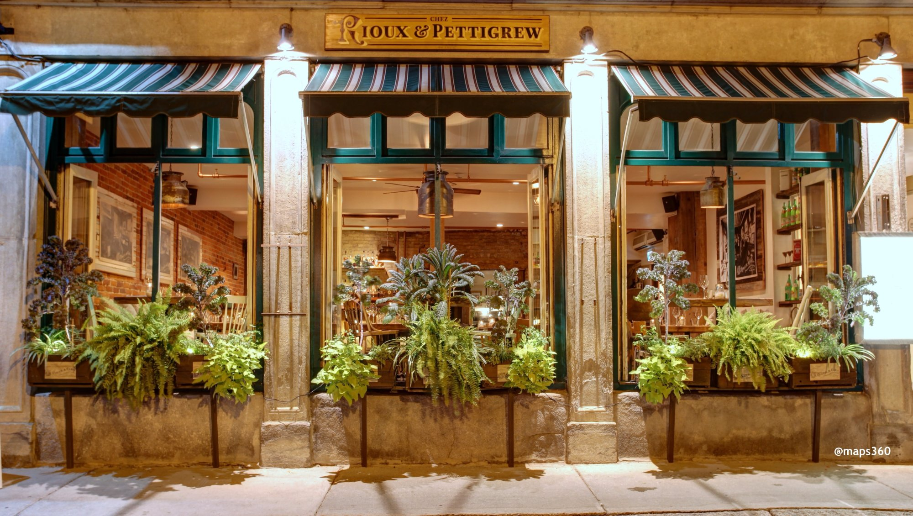

Welcome to Chez Rioux & Pettigrew, where every dish tells a story of craftsmanship and elegance. Nestled in the heart of Quebec, our bistro exudes charm and sophistication, inviting you to embark on a culinary journey like no other. From the first sip of wine to the last bite of dessert, immerse yourself in the flavors of tradition and innovation, expertly curated by our talented chefs. Whether you're celebrating a special occasion or simply craving a taste of culinary excellence, Chez Rioux & Pettigrew promises an unforgettable dining experience that will delight your senses and leave you craving more.
Opening hours: everyday from 5:30pm to 10pm.
Address: 160 Rue Saint-Paul, Québec, QC G1K 3W1, Canada
We offer full-service catering for any event, large or small. We understand your needs and we will cater the food to satisfy the biggerst criteria of them all, both look and taste.
Reserve a table, ask for today's special or just send us a message: